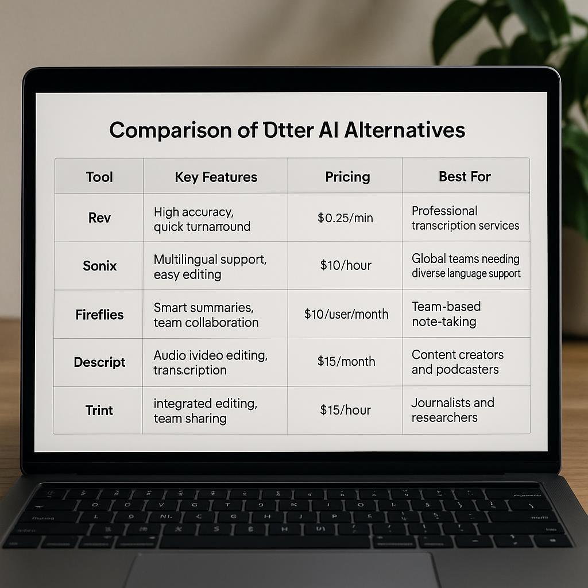

Top Otter AI Alternatives for Effective Zoom Meeting Notes
In today's fast-paced work environment, taking accurate meeting notes is crucial. For many professionals, Otter AI has been a go-to tool for capturing Zoom meeting notes. However, there are several other excellent otter ai alternatives for zoom meeting notes that can enhance your note-taking experience. This article explores various AI tools that can serve as effective alternatives, ensuring you never miss a detail in your meetings.
Why Consider Otter AI Alternatives?
The Need for Accurate Meeting Notes
Meeting notes are essential for follow-ups and action items. They ensure that everyone is on the same page and that important discussions are not forgotten. Accurate notes can also serve as a reference for future meetings.
Enhancing Productivity
AI tools can save time and improve accuracy. With the right tool, you can focus on the conversation instead of frantically jotting down notes. This allows for better engagement and collaboration during meetings.
Key Features to Look for in Meeting Note Tools
Transcription Accuracy
High-quality transcription is essential for any note-taking tool. The better the transcription accuracy, the less time you will spend correcting errors later. Look for tools that offer real-time transcription and support for multiple speakers.
Integration Capabilities
Seamless integration with Zoom and other applications is a significant advantage. Tools that can easily connect with your existing software ecosystem will streamline your workflow and enhance collaboration.
Top Otter AI Alternatives for Zoom Meeting Notes
Rev
Rev is known for its high accuracy and quick turnaround. It provides professional transcription services that are perfect for business meetings. Rev charges $0.25 per minute, making it a cost-effective choice for those who need reliable transcription.
Sonix
Sonix offers multilingual support and easy editing features. It is ideal for global teams that require diverse language capabilities. With a pricing model of $10 per hour, it provides excellent value for those needing extensive transcription services.
Fireflies
Fireflies is designed for team collaboration. It offers smart summaries and integrates well with Zoom. At $10 per user per month, it is a great option for organizations that prioritize teamwork.
Descript
Descript is more than just a transcription tool; it also offers audio and video editing capabilities. This makes it perfect for content creators and podcasters. The subscription costs $15 per month, providing a robust set of features.
Trint
Trint combines integrated editing with team sharing features. It is especially useful for journalists and researchers who need to collaborate on notes. The pricing is $15 per hour, which can be economical for larger projects.

| Tool | Key Features | Pricing | Best For |
|---|---|---|---|
| Rev | High accuracy, quick turnaround | $0.25/min | Professional transcription services |
| Sonix | Multilingual support, easy editing | $10/hour | Global teams needing diverse language support |
| Fireflies | Smart summaries, team collaboration | $10/user/month | Team-based note-taking |
| Descript | Audio/video editing, transcription | $15/month | Content creators and podcasters |
| Trint | Integrated editing, team sharing | $15/hour | Journalists and researchers |
Pricing Comparison of Otter AI Alternatives
Monthly Subscription Plans
Many alternatives offer monthly subscription plans. This can be beneficial for professionals who frequently attend meetings. For instance, Fireflies charges $10 per user per month, which is reasonable for teams.
Pay-As-You-Go Options
Pay-as-you-go options are perfect for those who do not need regular transcription services. Rev's pricing of $0.25 per minute allows users to pay only for what they need, making it a flexible choice.
How to Integrate Alternatives with Zoom
Setting Up the Integration
Most tools provide integration guides on their websites. Follow these guides to connect your chosen tool with Zoom. This will ensure smooth transcription during meetings.
Using APIs for Custom Solutions
For advanced users, exploring API options can offer tailored solutions. Many tools provide APIs that allow you to create custom integrations based on your specific needs.
Common Mistakes When Choosing Meeting Note Tools
Ignoring User Reviews
Checking user feedback is crucial. Real-world insights can help you understand the strengths and weaknesses of each tool. Don’t skip this step.
Overlooking Data Security
Ensure the tool complies with data protection regulations. This is especially important if you handle sensitive information during meetings.
Workflow Enhancements with AI Meeting Notes
Streamlining Collaboration
AI meeting notes can significantly enhance collaboration among team members. By sharing notes easily, everyone stays informed and aligned.
Improving Follow-Up Processes
Set reminders based on meeting outcomes. This ensures that action items are tracked and completed efficiently.
User Experiences with Otter AI Alternatives
Success Stories
Many users report increased efficiency after switching to alternatives. They find that their meetings are more productive and organized.
Challenges Faced
Some users experience issues with transcription accuracy. While most tools are reliable, it's essential to review notes for critical details.
Actionable Tips
1. Evaluate your needs before choosing a tool. Consider factors like team size and frequency of meetings.
2. Take advantage of free trials to test different tools. This allows you to find the best fit for your workflow.
3. Regularly review and update your note-taking process. As your team evolves, so should your tools.
Practical Checklist
- Assess transcription accuracy and user reviews.
- Check for integration capabilities with Zoom.
- Compare pricing models to find the best value.
- Ensure the tool complies with data security regulations.
- Utilize free trials to test functionality.
FAQ
How accurate are the transcriptions from these tools? Most alternatives provide high accuracy, but it's advisable to review the notes for critical details.
Can I integrate these tools with other software? Yes, many alternatives offer integrations with popular platforms like Slack, Google Drive, and more.
What is the average cost of meeting note tools? Pricing varies widely, but you can expect to pay between $10 to $25 per month for most services.
Are there free trials available for these tools? Many alternatives offer free trials or limited free versions, allowing you to test before committing.
Is it safe to use AI tools for sensitive information? Always check the data security policies of the tool you choose to ensure compliance with privacy regulations.
Can I use these tools for meetings other than Zoom? Yes, most of these tools can be used with various video conferencing platforms.
What should I do if the transcription is incorrect? Most tools allow you to edit the transcription directly, and you can often request corrections from customer support.
Reference: Search sources